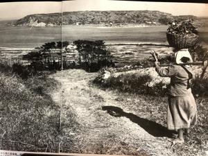
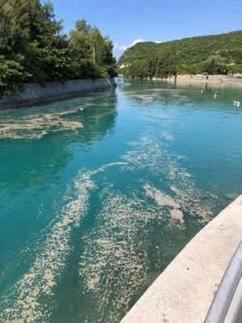
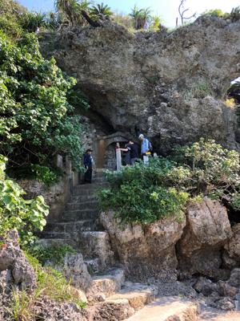
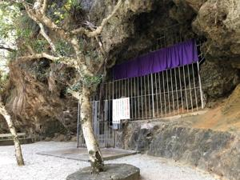
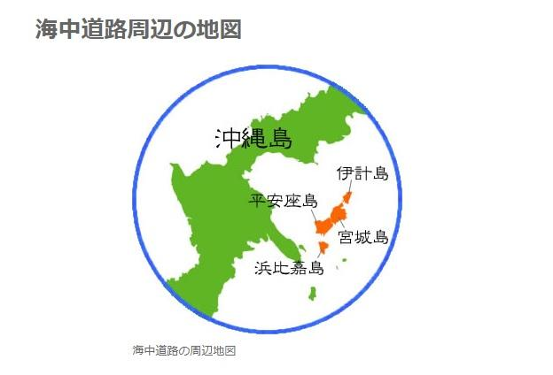

うるがいの話 ある日
最新: 浜比嘉島うるがいとは 前提知識です
カニの画像をクリックすると『うるがいの話』サイトを表示します|
|
【うるがいの話】 うるがい(ｳﾙｶﾞｲ urugai)とは、『もずくがに』の名前でとても大きくなります。 |
|---|---|
|
|
【Got cat カミマヤーの話】 たながー（ﾀﾅｶﾞｰtanagaa）とは手長えびのことで、何種類かあり大きいのは車 エビぐらいになります。 |

|
【ぶながぁの話】 ぶながー(bunagaa)とは、赤い髪の毛、赤い身体、そして身長は１ｍ２０ｃｍ ぐらい、川の蟹を食べているの目撃された。場所は沖縄県国頭郡大宜味村のと ある村僕の隣近所に住んでいる爺さんから、聞いた話です。 |
|
|
【ギーマの話】 ギーマ(giima)とは、山原の里山に咲くスズランに似た、 花を付けます。実は食べられます、 気が付くと口の周りが紫になっています。 |
2021年10月30日 (土）浜比嘉島
19:26
   
午前に眼科へ行く、左目のまぶたの方が炎症があるものの物は入っていないと
の事。ほっとする、昨日伊計島のホテルの駐車場にバイクを止めた直後に、左
目になにやらゴミが入ったようで痛い。しばらく、ごみが入っていないかゴソ
ゴソまぶたをいじっていたら、少し収まる。その足で、２５０円のちらし寿司
とヘルメットをもってホテルの奥にある海岸へ。海岸へ降りる時、１メートル
の高さを降りていたら、なぜか足元がグラ、そのまま無理せずひっくり返るこ
とに両手が塞いだ状態で、仰向けになった。何処も怪我はないようだ、それに
しても還暦過ぎてこんなところで転ぶとは。そこの浜辺は軽石がなく、いつも
ように綺麗だった。さ、帰るかと伊計島を少しブラリしながら帰路に着く。宮
城島の川で、軽石が浮いているのは見たが余り被害は少ないかもとバイクを走
らせていたが、ここまで来たらとせっかくなので、浜比嘉島へ行ってみようと
島へ続く橋を走らせて島に着くと、軽石が沢山浮いている。おお、島を回って
みることにする。人が群れている場所の浜に軽石が・・・、そこはアマミチュ
ーの墓（アマミキヨの墓）があるところでついでに拝んでくる。そのあとバイ
クを進めて行くと、シルミチューの案内がある。観光客の車の数台そこへ向か
っている。ついでに拝んだ。１１時過ぎに家を出て、帰って来たのは１５時過
ぎだった。気が付くと左目が痛い、病院へはもう遅い、ネットで予約を入れる
夜遅く、パソコンを前に左目からは涙が、しきりに落ちる。さて寝るかと椅子
から立ち上がろうとすると、左足首が痛い。海辺で転んだとき軽く捻挫をした
せいだ。目の痛みがひどいので痛みが感じなかっのだろう。なぜか、伊計島へ
バイクで行かなければならないと思っていた。机の前には、『平安座からみた
宮城島』の写真がある。私の小学生までの景色を感じるからだ。目の痛みは大
学生の時、バイクの燃料タンクにゴムホースでガソリンの容器から、ホースを
口にガソリンを吸い込み燃料タンクに入れる作業で、誤ってガソリンを右目に
かけてしまった時と同じ鋭い痛みを思い出した。そして、海岸へ降りる時にひ
っくり返り仰向けなったのは、中学生の時、川沿いの道から数メートルしたに
落ち仰向けなったいた（なぜ、落ちたのか記憶がない）。さらに、左足首の捻
挫は、大学一年生になったばかりの授業を申請するとき、一般教養のビルから
（今の首里城）、体育館（今の芸大の資料館）への下り坂を降りる時に捻挫し
たこと。今年亡くなった３女の妹の義理のお母さんが、はるか昔に亡くなった
姉と２女の妹達があの世で、浜比嘉島で修行していると神がかりしている人か
ら伝えられたと私に話したこと。うーん、何かに導かれ拝まされたのかも。
